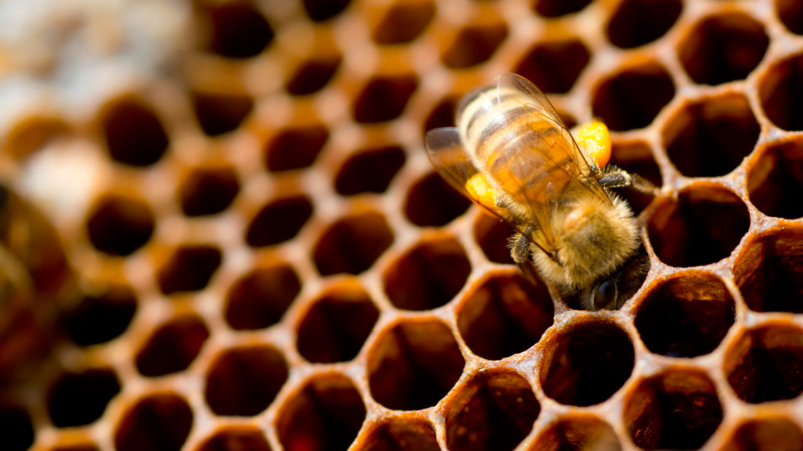
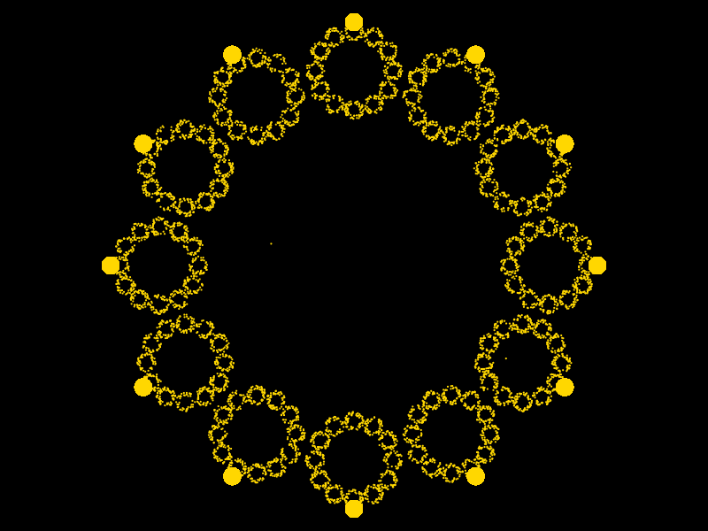

We see lots of instances of mathematics being used in nature .


Beehive
Like, symmetry(lateral and spiral),shapes(hexagons in beehive),fibonacci spiral or fractals.
 Flower
Flower
The diversity of patterns we see in nature can be explained by a mathematical model.
Leaves